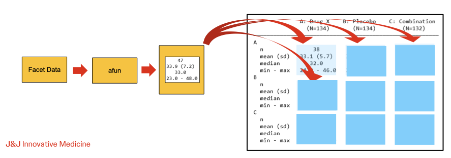

Advanced rtables - Custom Analysis and Group Summary Functions
Contributed by Johnson & Johnson Innovative Medicine
Gabriel Becker
Dan Hofstaedter
2025-10-22
Source:vignettes/guided_advanced_afuns.Rmd
guided_advanced_afuns.RmdAnalysis and Group Summary Function Review
During table creation, rtables calculates the contents
for rows in normal and marginal summary rows by calling analysis an
group summary functions, respectively, on the relevant facet data. Thus,
while the split_row_by* and split_cols_by*
functions allow us to declare the structure of our desired
table, the analyze and summarize_row_groups
functions, via arguments afun and cfun,
respectively, allow us to declare the contents to appear in each
structural facet of our desired table.

Key points to recall about a/cfuns:
- First argument must be
xordf-
xwill be passed a facet data vector for the variable (column) being analyzed/summarized -
dfwill be passed the full facet data frame containing all columns of the data subset for the facet
-
- Can accept optional special arguments which will be
populated by
rtablesduring tabulation- Values of these arguments cannot currently be overridden by the user
- Can accept additional (non-special) arguments as desired
- These can be passed via the
extra_argsargument toanalyze/summarize_row_groups
- These can be passed via the
- Should return the result of calling
in_rows(aRowsVerticalSectionobject) - Only difference between
afuns andcfuns is that the latter must acceptlabelstras the second argument-
labelstrwill be automatically populated with the label for the facet being summarized for acfunand not passed to functions used as anafun
-
General Analysis/Summary Function Structure
Due to the last key point listed above, we can template a function that can be used as both an analysis and summary function:
library(rtables)
# Loading required package: formatters
#
# Attaching package: 'formatters'
# The following object is masked from 'package:base':
#
# %||%
#
# Attaching package: 'rtables'
# The following object is masked from 'package:utils':
#
# str
template_acfun <- function(x,
labelstr = NULL,
## <optional special args>,
## <additional args>,
...) {
if (is.null(labelstr)) {
## 'calculate' label(s) for afun-usage case
lbl <- "cool label, bro"
} else {
## calculate label(s) from labelstr for cfun-usage case
lbl <- labelstr
}
## whatever calculations we want
out <- rcell(sample(c("what?", "huh?", "eh?"), 1), format = "xx")
## return our value(s) via in_rows
in_rows(.list = list(ok = out), .labels = c(ok = lbl))
}We can then use this function in either capacity:
lyt <- basic_table() |>
split_cols_by("ARM") |>
split_rows_by("STRATA1", split_fun = keep_split_levels(c("A", "B"))) |>
summarize_row_groups("STRATA1", cfun = template_acfun) |>
split_rows_by("SEX", split_fun = keep_split_levels(c("F", "M"))) |>
summarize_row_groups("SEX", cfun = template_acfun) |>
analyze("AGE", afun = template_acfun)
build_table(lyt, ex_adsl)
# A: Drug X B: Placebo C: Combination
# —————————————————————————————————————————————————————————————
# A what? eh? eh?
# F what? huh? eh?
# cool label, bro eh? eh? huh?
# M what? what? what?
# cool label, bro eh? eh? what?
# B huh? huh? eh?
# F eh? huh? eh?
# cool label, bro what? what? what?
# M huh? huh? eh?
# cool label, bro eh? huh? eh?In light of the above, we will - without loss of generality - discuss analysis functions exclusively for the remainder of this guide with the exception of any situation where the difference is specifically relevant.
Arguments To Analysis Functions
Beyond .spl_context, which is covered in detail on its
own in the next section of this guide, the special arguments (again:
those that rtables will populate itself during tabulation)
can be categorized into three rough, somewhat overlapping groups:
- Marginal Counts
- Facet Data
- Reference Group Information
afun Special Arguments: Marginal Counts
Among special afun arguments supported by
rtables, those which supply marginal counts are the most
straightforward. That said, some care is warranted to ensure we
understand the values our function will receive, particularly in the
cases of .N_row and .N_total, as we will
see.
Marginal Column and Row Counts (.N_col and
.N_row)
.N_col will receive the column count - as understood by
the rtables machinery - for the individual column our
analysis function is currently being applied within. .N_row
meanwhile, will receive a row count of the facet data for the (full) row
facet our function is being applied to.
When an alt_counts_df is provided in the call to
build_table .N_col will receive a count
calculated based on that data frame, the same as the column counts which
can be optionally displayed when rendering our tables.
Unlike .N_col, however, .N_row will
always receive a count based on the primary data
(df) passed to build_table. Thus
in the common case of df being e.g., an ADAE
dataset representing individual events while alt_counts_df
is the corresponding ADSL dataset corresponding to
subjects/patients, .N_row will receive a count of
events, while .N_col will receive a count of
subjects. This is due to the fact that
alt_counts_df is required to contain the variables
necessary for all column splitting in our layout, it is not
required to contain all variables necessary for the row splitting.
Other Marginal Count Special Argument
.all_col_counts will receive the full vector of
individual column counts regardless of which column our
afun is operating within. Like .N_col, these
counts will be based on alt_counts_df when it is specified
within the call to build_table.
It is not advised to use
N_total. Its current implementation
effectively returns the sum of all column counts; while this will be
correct for tables with simple column structure, it does not take into
account partially or fully overlapping columns and will be incorrect
when those are present in the table structure. In the next chapter of
this guide we will use the split context (.spl_context) to
derive a robust equivalent to .N_total as a way of
illustrating some of the information the split context provides.
Further Topics On Creating Custom Analysis Functions
-
Structure-Conditional
Behavior In
afuns With.spl_contextCreatingafun/cfunbehavior conditional on location within the table structure using.spl_contextand other optional arguments. -
Calling
Existing
afuns Within Customafuns Details about whatin_rowsreturns and how we can use that to wrap or combine existingafuns orcfuns -
Useful
Behavioral Building Blocks For Complex Custom
afuns Examples of prototypical behaviors which can be reused and combined when writing customafuns